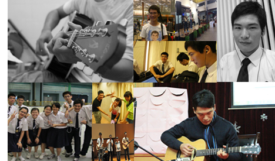

Hi this is Yuli's webfolio:)
I will regularly upload some source code of my personal projects here. Hope we can learn from each other. Pls feel free to post a comment!
You can also get to know me through:
2000-2004 Xiaguan Experimental Primary School, Nanjing, China
2004-2007 Youfu West Street Primary School, Nanjing, China
2007-2010 No.13 Secondary School, Nanjing, China
2010-now Dunman High School, Singapore
- Fingerstyle guitar (First studio record released! Listen here)
- Japanese
- Visual Basic 6.0/2003
- C/C++
- International Competitions & Assesments for Schools - Computer Skills 2nd Placing (2011)
- Singapore Amazing Flying Machine Competition(SAFMC) C Group Silver & Theory Gold(2012)
- DHS Centre Stage Group Category 2nd Placing(2012)
- Japanese Language Proficiency Test(JLPT) N2 Distinction(2013)
Autologin ver1.4 (Download)
A python programme which help you to login in DHS Hostel wireless using a guest account.
New features:
10/02/2013_v1.4 Bug fixed.
08/02/2013_v1.3 Optimised for responsiveness and latency.
Coming up soon:)